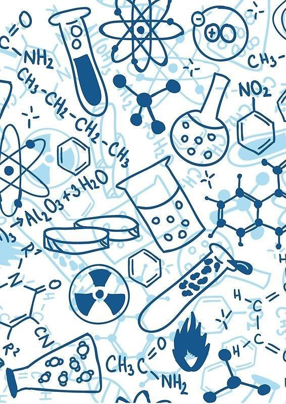
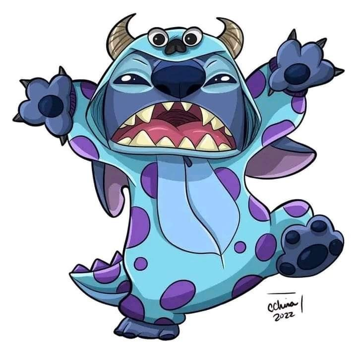
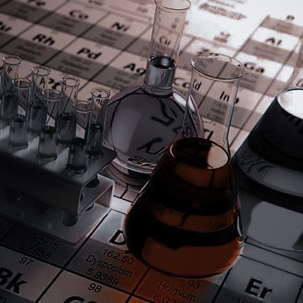
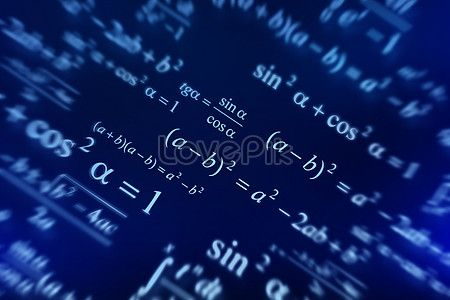

Who Even Am I?

I am currently sixteen years old and will be turning seventeen this year. My real name is Srishti but I go by Sri on online platforms most of the time. I am a student and have a keen interest in history, art, and coding (still chose the non-medical stream for some reason). I am a very extroverted person and love animals very much. I personally dislike people who try to act dominant over others or look superior to them. I am an Indian and can speak Hindi, Maithili, Bhojpuri, English, and the most enchanting language of all, Sanskrit. Well in school years I first used to study French but later changed my language choice to Sanskrit (no hate, actually French was a language my mother could not teach). And yes I am a big foodie and love to eat all kinds of food, but I would appreciate chicken more. I follow Hinduism and believe in all the gods and goddesses of the Hindu pantheon. But you know every person has that one god they love the most and for me it's Lord Shiva (The Destroyer God).

My hobbies include reading online books, watching anime and dramas, listening to music, and coding. I also love to travel and explore new places. I am a person who does not like to talk nonsense for no reason, but I also wanted someone to talk to so I adopted a pet rabbit named Chicku. He is just so lovely and cute. My special skills are actually sports like badminton, tennis, and football. I also have played district matches in athletics, state matches in javelin, shot put, and discus throw. In 2021 I also won a gold medal in National level Karate championship of the form Taiyo Kai Shito Ryu. But sadly could not participate in the International Level because of COVID as well as you know I was not old enough to travel alone at that time, and my parents were not ready to let me go alone.
My Art Talent
I think that art is what i inherited from my mother.Not trying to show off but my mother used to be a fashion designer and a professional madhubani art artist.
The sad thing is that we (me and her brother) held her back from her dreams and eventually she gave up that job to take care of us.
I will not say that i am creative.....it's probably that i am just good at copying things.Like i do not rememeber a thing i made from my imagination and it came out successful.
I HAtE WatEr CoLoRs.... in starting i do everything perfectly but then i get impatient and Ruin the sh*t out of my painting.

But i do like sketching and shading things and i think that i am pretty good and actually patient in those kinds of drawings.
The two paintings which are displayed are actually made by me (source- got inspiration from pinterest)
The one above is Madhubani painting originated originally from India from a small village in Bihar.
Madhubani originally was painted only on gods.
The painting below is a modern art consiting of proper straight lines and perfect proportions.
Do tell me how it looks!!!
Also tell me which type of art you like the most.
Now do i believe that there is Art hidden everywhere? Certainly yes, I do actually believe that if one look with no other distraction and look around them clearly,
one can find art in the most unexpected places.
School Life

Do I like school???
Bro! Not at all. I hate the fact that I have to wake up so early in the morning, like 5:00 am, and get ready for that stupid school. I hate that we have to wear those ugly uniforms, follow so many rules, and stay seated for 7 hours straight. Like seriously, who thought of this stupid idea of school? We only get a 40-minute period of games in a week and another 40-minute period of art in a week. What are we??? Robots???
Nevermind. The best thing about school is meeting my friends and bunking classes with them. Well, we do get caught easily, as other students cannot mind their own business. The teachers always show favoritism and only favor students who are already good in studies. Do we exist? Are we invisible? Or are we just too dumb to understand?

Maybe I am being way too dramatic.
Why don't you try visiting my school once? I bet you will feel better being in a cell than this stupid school. Just kidding! I do have some good memories in school, like Annual Functions, Diwali Mela, and also, I do not know how much our school earned that year, but Sunil Shetty and Shah Rukh Khan were the chief guests for our annual function. I am not even joking — THE LITERAL RICHEST BOLLYWOOD ACTORS WERE THE CHIEF GUESTS. I guess schools do actually do good things sometimes.
My Studies
With future success in mind I must study. I took non-med as my stream (all stream- commerce/humanities/science(medical/non-medical)). In non-medical we have have maths,chemistry and physics (English is compulsory for all stream) and we have to choose two additional subjects. The choices for first subject : (Music/Painting) . The choice for second subject: (Computer Science/Psychology/Physical Education). And yes!!! I chose painting and computer science as additional subject.The most schocking thing is that i thought that painting would be easy! WELL NOT AT ALL !!! We literally learn about painting have to writer about their writer,color composition , style , why they drew extra-extra like WHY?? WHAT IS THE NEED?

After taking the most difficult stream- science . I just keep wondering if i should have taken commerce. The thing in our society is that if you take science stream- you would get respect and would be talked behind your back and criticised for taking Humanities (also known as ARTS). According to our messed up Indian society the one who takes ARTS are not good enough!! and the people who are average takes up commerce. Well i am one of those people who never had a dream job. For me it works like "I would take the job i perform best in". Well it's not from Science stream as far as I know. Since childhood i have always been very interested in Historical facts and all. But who will convince my parents to change my stream. Anyays it's already too late to now cry about it.
My Personality
I am a extrovert, not the one who likes to just chat with any random person but enough extrovert to keep my points in front of others.I must say no one is born categorised in introvert or extrovert. I was way too intovert till grade 3rd grade then on changing schools i got confidence. You may ask where i got that much confidende right? (Well at that time i came across students who were mostly from villages and did not understand much of what i was saying) [note : I know that was not a good thing but i was just a kid. I was used to get bullied so it was my first time seeing people who were interested in me]. You do not wanna know how dumb i was ......like really dumb . At that time my own best friend got me slapped from a teacher and also she used to bully me. LIKE WHAT WAS WRONG WITH ME????.
Well its all past. Now i have a best friend like an angel and not kidding her name is "Angel". She is great great. In other ways i am very calm person like way too calm.I don not get offended easily so i do not say anything to people who talk bad about me.BUT THERE IS ALWAYS A LIMIT TO EVERY LITTLE THING IN THIS WORLD. Once that limit is crossed,you may wanna pray for yourself cause i might be the strongest woman you have cam face to face. Well i do not curse in front of people and call teachers weird names like others (i curse only in text). I usually hate to show my weakness and emotions in front of people cause i bet most of them are actual snakes in disguised.
My Idols
In today's world one must be really living under a rock for decades for not knowing what BTS is...... Haters trying to be cool call it Behind the scene or Bangtan Toilet Service. Like really? Just because your crush/girlfriend cares more about BTS than you? BTS is one of the best thing happened to me.I cannot afford their merch,cannot afford their light stick and albums but still there is something special which they ignite in evryone's heart.
People telling that they look like girls?? Well one should mind their own business they can be girls, act as one, or even if they are !!! It has nothing to do with us. They sing and we listen,we are not suppose to actually interfere in their personal life. SORRY its just that there has been lot going on in 2025.Well i love them and hope for their best in future.
My Brother
My brother is four years older than me.When i was born and my brother got allowed to enter in hospital room,he was eating chips and to show love he decided to share it with me.He literally tried sharing his own chips to his sister (well it is kind of hearttouchin as kids that small do not like to share their snacks with anyone.) Well all my life my mother said that she does not show favourism at all.....you know what? the whole family shows favourism.

Well we would have been great siblings if his male teen ego did not kick in. I used to play with my brother and friends but later he started to drive me out of every plan of theirs.Now he is in college doing internship and stuff so we again started acting normal. Its like suddenly all toxity among us has disappeared.Well i do not like the fact that he is the better kid,student and sibling.I am tired of all the coparison. What do you mean that we are not like each other? Well we are not each other that is why!
My Neighbors

Well many of my neighbours have been family-friends for years....or should i say family-snake.They all can fool my mother,brother,father and grandparents but i can see right through them. They make fun when one of the reative is missing,where is the guarantee that they do not do the same behind our backs.Specially those aunties....whome we would call "Gossiping Unemployed Women".These ladies believe that if any kid of others are doing something amzing then they are doing bad but if their kids are doing the same then they are the God.

I myself have heard them talking about me. Like me??? Imagine being so done with life and useless that you are taking bad about kids with your friends. Does that even make sense?.Their husbands are unbeievably loud and so irritating like what so funny about a red car backing into its parking place to park the car?.All are very dramatic.Those aunties do not have a better thing to do. They wear saris indecently (like there is a decent way) and then judge girls who wear dresses (dresses is a lot.....they even judge girls wearing a long dress).Unemployement at its peak.
My Chemistry

Chemistry?Cemistry? I still wonder if we got scammed till grade tenth......like why the chemistry which was the baby subject suddenly turn so hostile.I just gave my mid term and i am pretty sure i am gonna fail.Why do you also include JEE Mains and Advance Questions when we are only preparing for 12th Board 2027.Nope to prove that they teach better my chemitry teacher likes to maked students cry, and ya for some reason he thinks that he is very cool.

He sounds som lame and weird trying to be cool when he only looking like a plan "Chomu"(meaning-https://search.brave.com/search?q=chomu+meaning&summary=1&conversation=4471f57f307ac5107566ec).He calls students name on their face.He got some personal issues with me and my best friend he said things like: "Srishti is being controlled by the person on his back!" and "Srishti is the cart and the one sitting and controlling like Krishna is *real name will not be provided*(Angel)"". What did we do to you man?I and my best friend and other friends hate him.He is very hatable.
My Maths

Maths....My od rival subject....I had beef with maths since grade 6th but in final exams i always did a comback. In 10th i was fail in preboard exam with only 41 marks but in boards i got 93.I always taught maths to myslf and never actually was taught by a teacher. (Lying-papa laughing in the corner).One could say that i was never interested in hearing,why woud i like hearing numbers being recited? In my father's teaching case something was differednt and that was "AURA".He gave off very dangerous aura while teaching and i hated sundays when i was younger.....The out of nowhere line. "Go bring your maths book and rough copy" used to send shivers down my spine.
In grade 8th there was a teacher who was very strict and i was scolded by her many times but atleast i used to understand what she is saying.My present teacher since 9th grade is just pure pain in my bum bum.He only teaches people who already have studied the chapters and always used to start from the back exercise (the most difficult)without any introduction saying he would teach us from last to first but we never even finished the last exercise.
mmmmmmm